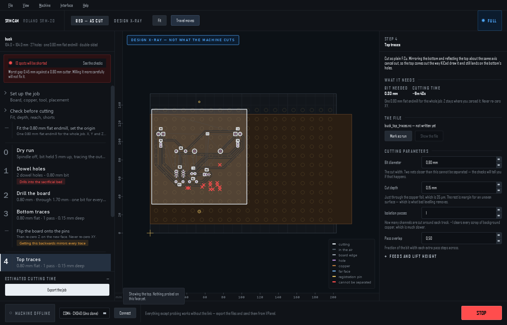
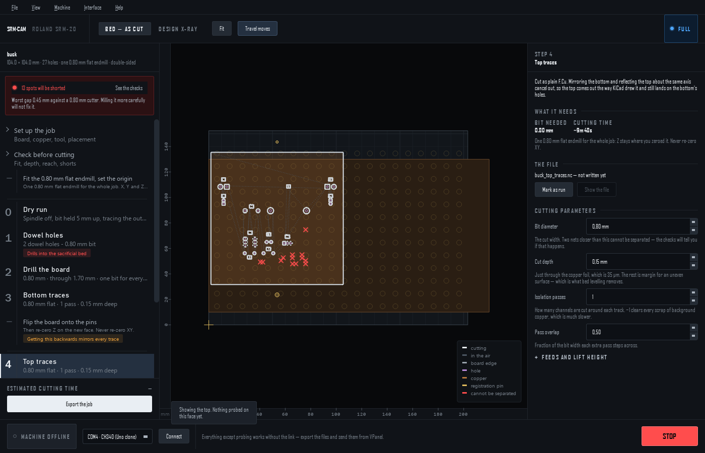

Double-sided boards
Both sides register off machine-located holes, never the board edge. Full tier: tick This board has copper on both faces on the setup page (needs F.Cu).

The plan
Ticking the box changes the run plan: the cut-out moves to the end, because it is what frees the board from its own registration.
- 1 · Dowel holes / Fiducial holes —
<name>_align.nc. Dowels drill on into the bed and cannot be undone; the export asks first. - 2 · Drill the board —
<name>_bottom_drill.nc. - 3 · Bottom traces —
<name>_bottom_traces.nc, mirrored. - Flip the board — onto the pins, or re-place it freely with fiducials. Re-zero Z on the new face. Never XY.
- Measure where it landed — fiducials only; see below.
- 4 · Top traces —
<name>_top_traces.nc, cut as plain F.Cu. - 5 · Cut the board out —
<name>_cutout.nc, last.
Pick a registration
| Dowel pins | Fiducial holes | |
|---|---|---|
| How | Two holes of different sizes through the stock and 5 mm into the bed; flip onto seated pins | 2–4 holes in the stock only; flip freely, probe where they landed, the top files warp to fit |
| Measurement | None | Probe each hole after the flip |
| Accuracy | Sub-0.1 mm, proven | As good as the probing |
| Needs | Waste around the board for the pins | Nothing extra with the holes on the board |
Dowels use the lab's proven geometry — 3.1 and 1.9 mm rods, clearances dialled in on a fit-test coupon. Fiducials have their settings on the setup page: hole diameter (wider than the bit, so it can be found from inside), In the waste or On the board, the offset from the corner, how many.
Measure where it landed

- List the holes to probe — the nominal positions after a perfect flip, and where to jog.
- Measure each one — jog over the hole and Capture into the selected row from the position readout, or Find it for me: the bit is lowered inside the hole and the edge found electrically. Or type what VPanel shows.
- Read the verdict — the worst hole's disagreement with the others. Under 0.05 mm is good; up to 0.15 usable but re-probe the worst one; beyond that, re-seat the board and probe again. The fit is adopted as soon as it exists, so the stage shows the board where it really is.
- Write the top traces and the cut-out — both files re-written to the measured flip, with the top face's height map if you probed it and the same extra depth the bottom got. Finish the blind holes from this side re-drills the holes from the top to meet the ones from below.
Corner fiducials cannot detect a wrong flip direction — the fit looks perfect either way. Before running the top traces, Click to jog to a distinctive board hole with the top step selected and confirm the bit hovers over it in reality. Ten seconds; saves the board.
Grid-seated dowel pins, editable dowel clearances, a chosen flip axis and hand-placed fiducials are settings of the first interface only. Reach it with SRM-CAM --original.